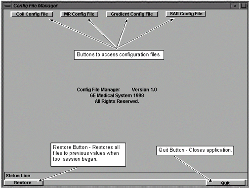

Operating Documentation
Direction 5440001-3, Rev# 6
Signa HDxt Service Methods
Module Version 1.0, Version Date 5/15/07
Operating Documentation |
| Required Persons | Preliminary Reqs | Procedure | Finalization |
|---|---|---|---|
| 1 | 0 min | 15 mins | 0 min |
Table 1 is an index to this module. The Coil Config File lets you add, remove and edit coils being used by a specific site. See Illustration 1.
Illustration 1: COIL CONFIG FILE SCREEN (TYPICAL)

| NOTE: | The pre-configured coil lists for the Config File Manager tool
are in the directory /w/config. The sample files shown are for 1.5T and 1.0T;
files exist for other field strengths.
Cable and coil loss values are different for each of these systems. During the software installation, the system copies the appropriate coil definition file, above, to the CoilConfig.df (in /w/config). The CoilConfig.df file is then used by the Config File Manager tool when adding an “Available Coil.” |
| NOTE: | All coils available for Signa will be pre-configured as part of a software load. If no Restore Info is applied to the system, it will be necessary for the installer to remove coils that are not being used by the site. Coils will only need to be added if the coils are not GE-standard. |
Table 1: In This Procedure
The items covered in this module are: |
In the Config File Manager screen, select [Coil Config File].
Select the coil(s) to be added to the site’s configuration by clicking on the desired coil name(s) in the Available Coils list. See Illustration 1
Click the [>>ADD>>] button to add the selected coil(s) to the Site Coils list. You must reboot Signa for scan to recognize that a coil has been added to the list.
On the Config File Manager screen, select [Coil Config File].
From the Available Coils list, select these coil names
8 TRPA test
TRPA1234
TRPA5678
Click the [>>ADD>>] button to add the selected coil(s) to the Site Coils list.
Exit and save your changes by clicking [Quit], [Yes], and then [Save].
Reboot Signa for the coil changes to take effect.
| NOTE: | In order for the MCR tool to run, these three coil names must be in the “Site Coils” list: 8 TRPA test, TRPA1234, and TRPA5678. Do not delete any of these three from the list. |
For new Excite installs for 4.x/5x upgrades, be sure to leave the 8 TRPA test, TRPA1234, and TRPA5678 coil names in the “Site Coils” list when removing non-site coil names. They must be in the list in order for the MCR tool to run.
On the Config File Manager screen, select [Coil Config File]. See Illustration 2.
Illustration 2: CONFIG FILE MANAGER MAIN SCREEN (TYPICAL)

Select the coil(s) to delete in the Site Coils list by clicking on the coil name(s). See Illustration 1.
Click the [Remove] button to delete the selected coil(s) from the Site Coils list. You must reboot Signa for scan to recognize that a coil has been deleted from the list.
On the Config File Manager screen, select [Coil Config File]. See Illustration 2.
Select the appropriate coil(s) (you can select more than one coil) in the Site Coils list by clicking on the coil name(s) and then clicking the [Edit Coil] button. See Illustration 3.
| NOTE: | Scan is sensitive to upper/lower case entries in the coil config file. Always use lowercase yes/no entries for coil parameters (e.g. “Multiple Receiver Coil?” and “Extremity Coil”). |
Illustration 3: COIL CONFIG FILE SCREEN (TYPICAL)
The Coil Edit screen displays the present values of the selected coils. See Illustration 4. To change a value, click in the field to enter text or tab through fields and make the necessary changes.
| NOTE: | Use the [Delete] key to edit text. When you press the [Backspace] key, it will start deleting from the end of the field instead of from where the cursor is located. |
Illustration 4: TYPICAL COIL EDIT SCREEN

Click [OK] to close the screen.
You must exit the tool and reboot Signa for scan to recognize the coil configuration changes.
On the Config File Manager screen, select [Coil Config File]. See Illustration 2.
[Click the Add new Coil] button. See Illustration 3.
The Add a New Coil screen displays the coil value fields for a new coil. See Illustration 5. Values for new coils are in the service manual provided with the coil. For the new “Multi Coil Recon Enable” field, enter 0 as the default unless instructed otherwise. Either click in the fields or tab through the fields to enter values.
| NOTE: | Use the [Delete] key to edit text. When you press the [Backspace] key, it will start deleting from the end of the field instead of from where the cursor is located. |
Illustration 5: ADD NEW COIL SCREEN (TYPICAL)

Information of othe components of Configuration File Manager are accessed in .
No finalization steps.